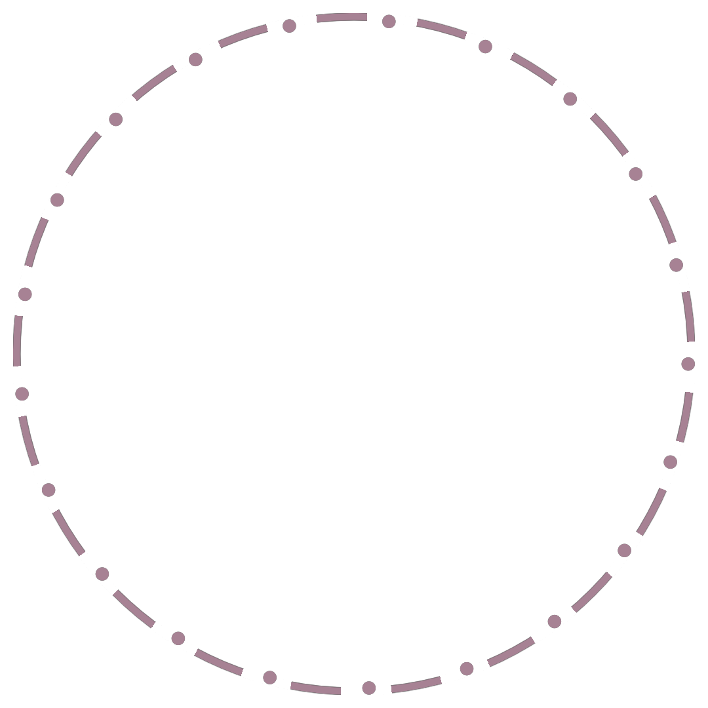
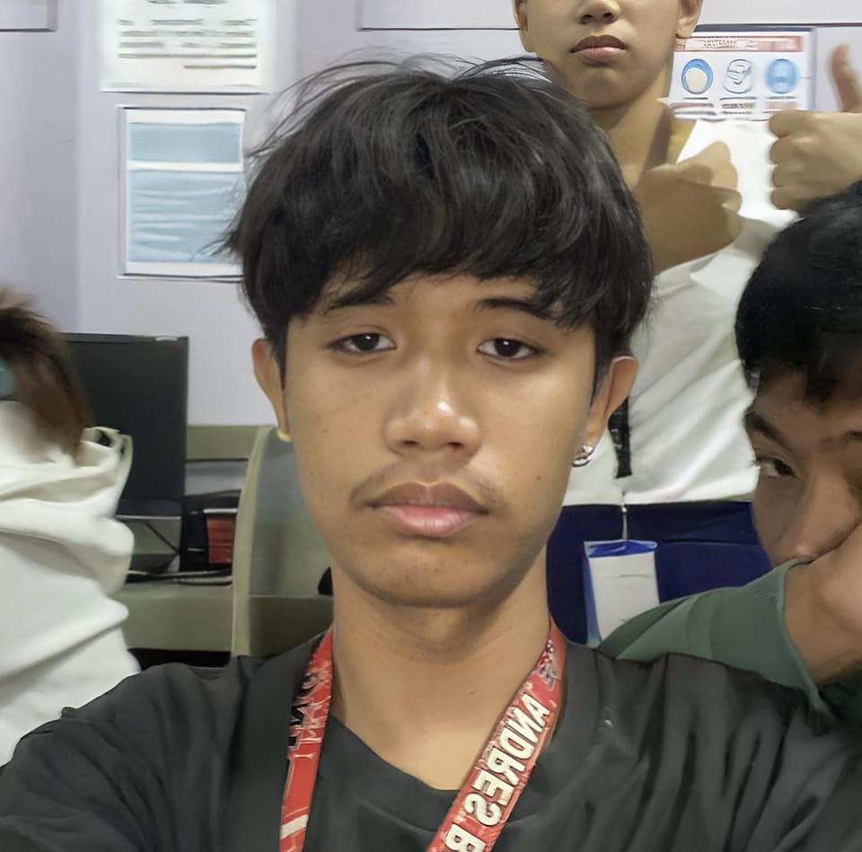

HELLO
I AM RJ
GRAPHIC ARTIST AND VIDEO EDITOR
I’m Rey Jhon, also known as “gop” and “jan”, a second-year student pursuing a Bachelor of Science in Computer Science at JRMSU KC. My passions lie in Graphics Artistry and Video Editing, where I delve into creating visually compelling graphics and refining visual storytelling through editing techniques. I’m dedicated to advancing my skills in computer science while striving for excellence in both academics and creative pursuits.

